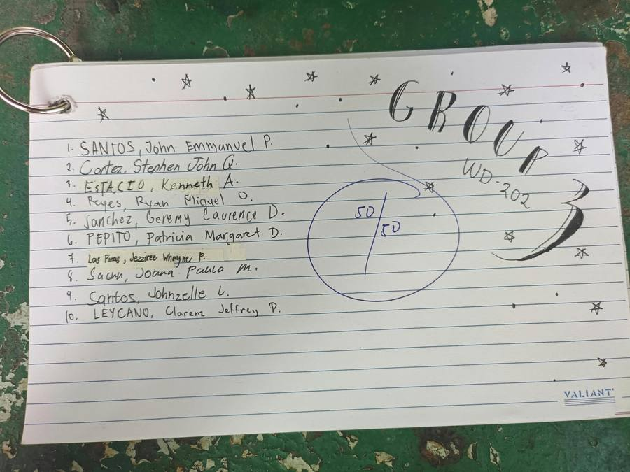
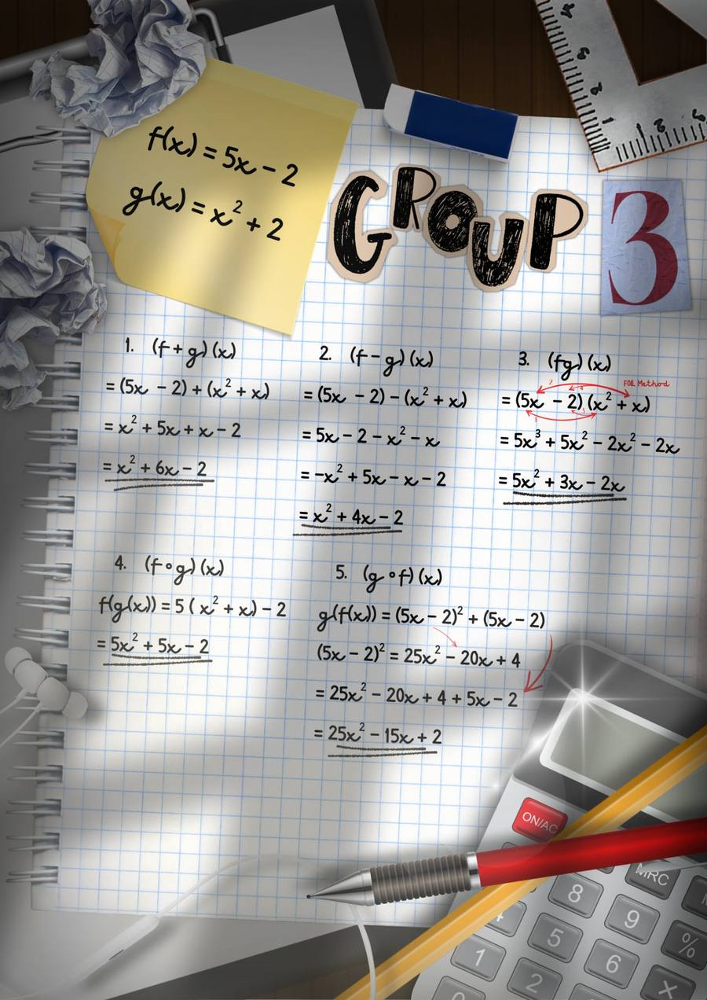

Learning Artifacts
Seven papers, five worksheets and two exams. I hopefully didn't miss any, but as far as I know these are all of the post-checking papers.
Composition of Functions
Topic: Functions and Function Operations • Score: 22/25
Given f(x) = x + 5 and g(x) = 3x − 2, I worked out the sum, difference, product, and both compositions of the two functions, using the FOIL method to expand the product by hand.

This was the very first task as far as I remember, and it just reminded me of DMaths from last year, and that gave me a real scare for a bit before I realized it was a LOT easier than I remember. I'll chalk it up to my professor's method, but it really didn't feel all that bad to do in the moment. The only reason I didn't get a perfect score on this one is because I didn't double check or check with my friends, because the oopsie was me dropping a sign, this was also my first time sitting in a class till 9:30, which is another reason I'll say I made such a silly mistake.
Evaluating Limits (Direct, Factoring & Rationalizing)
Topic: Limits • Score: 16/25
Five limit problems requiring direct substitution, factoring out common binomials, and rationalizing a radical expression to remove a zero-over-zero indeterminate form.

This one was more than an 'oopsie', I fried this one and totally messed up. As far as I remember I wasn't really able to keep up with the discussion and ended up super confused, this was the second ever activity so I think I still deserve a bit of slack for scoring a sixteen out of twenty five. In hindsight, this topic wasn't supposed to be difficult, I just misunderstood it, it was after this topic that I started to ask more questions and make sure I was talking to my seatmates for advice or if I had any questions that I needed answers to. Additionally, after this task, I started doing very simple practice of the discussed subject when I got home, to really hammer the nail into the board, though... I'm pretty sure that didn't help much.
Preliminary Examination
Topic: Everything from Prelims, solving was Limits. • Score: 33/50
The written portion of my preliminary exam covers limits at a point and at infinity, composition of functions used inside a limit, and evaluating a rational function as x approaches a finite value.


I'm not even gonna lie, because the back page speaks for itself and there's no reason to hide it: it looks like I lost my mind. There are crossed-out attempts stacked on top of other crossed-out attempts, an "x 12" scribbled next to a wrong answer I circled back to fix, an entire limit-at-infinity problem where I second-guessed a correct 24/0 result, struck it out, and then had to re-derive that it actually simplifies cleanly. Item 39–42 alone has three different numerators tried before I landed on the right one. Looking at it now, that mess is exactly what panicking through a timed exam looks like on paper: I wasn't working a system, I was throwing bull#### at the page and hoping something stuck, which is the opposite of everything I now know limits actually reward.
The part that actually saved a lot of these items was falling back on function composition, substituting f(x) into g(x) and h(x) methodically instead of trying to shortcut it, because that was the one piece I'd drilled enough to do on autopilot even while completely baked. The lesson this exam taught me had nothing to do with any specific limit rule and everything to do with exam behavior: when I don't trust an answer, my instinct was to attack it from six different angles at once instead of picking one clean approach and following it through, hit it with every possibility instead of just trusting the one I might be confident in. I've since started forcing myself to finish one full attempt, box it, and only then decide whether it needs revisiting, because half of the scratch-outs on this page turned out to be correct on the first try anyway (Which pisses me off looking back at it).
Basic Differentiation Rules
Topic: Basic Rules of Differentiation • Score: 20/20
Ten short items applying the constant rule, power rule, sum rule, and difference rule to polynomial and rational functions written with negative exponents.

I've never felt like a genius solving small problems. Doing things right and getting everything to flow into each other genuinely felt addicting, everything felt automatic and I wasn't scrambling. I actually understood what was discussed and it showed here. In all honesty, the perfect twenty didn't register in my mind till I checked all my scores again, because it wasn't what I was going for, I was just going for an undestanding on the subject. This worksheet is what helped me with confidence on my knowledge, helped me trust myself and trust the fact that I can know things too, that my gut can be right.
Product Rule, Quotient Rule & Fractional Exponents
Topic: Product Rule, Quotient Rule & Fractional Exponents • Score: 45/45
Nine items: rewriting roots as fractional exponents, identifying u and v before applying the product rule to polynomial products, and applying the quotient rule to three rational functions.

This is probably the cleanest I've worked on paper, everything else looks like a chicken #### on it. I barely remember this actiity, but I can see I worked more systematically on this one. U and V are named first before anything else, then once I got to the solving, I made sure to keep things clean, I remember I kept up well during this subject's discussion, so because of that I knew to trust my very first gut instinct because it would definitely be right, or so I told myself. This activity is what finalized my trust in myself, to just follow the system and make sure I keep up so I don't make any simple mistakes.
The Chain Rule
Topic: The Chain Rule & Higher-Order Derivatives • Score: 20/20
Four composite functions differentiated using the chain rule, each broken down by explicitly writing the inner function's derivative before combining it with the outer derivative.

This activity didn't involve too much thought. You just took everything from before and made sure you didn't forget anything before proceedin. I honestly feel a little proud of myself looking at the paper, becuase I know I didn't use a scratch, I wrote everything on the paper and it shows I either did it mentally or I barely thought about it and it wasn't too big of a thinker. This artifact is probably the one that showcases my understanding the best.
Midterm Examination
Topic: Everything covered in Midterms • Score: 30/50
The midterm's multiple-choice section covered a mix of earlier topics, and the show-your-work portion on the back (items 31–50) asked me to apply the chain rule, differentiate logarithmic and trigonometric functions, and find higher-order derivatives.


This exam had hands. If I'm being honest I completely flunked it. I didn't study beforehand, didn't practice anything, and because of that I got a thirty, which might be high to someone, but it was not a score I should've been getting. I completely gave up doing the solving parts, too, as evident by the blank backpage. Most of the score came from the multiple choice part where I reached as deep as I possibly could into my mind for any in-stock knowledge that I still retained. The midterms was particularly hard because it was during September, and we both know we had barely any face-to-face classes because of the weather, forcing us to stay at home and that meant I could't get the type of interaction I needed to learn and study Calculus. The streak of no classes really did ruin the run I was on, I'll blame it on that.
Additional Projects
Three more group pieces, roughly in the order our group worked through them, all done with the same team, Group 3: John Emmanuel Santos, Stephen John Cortez, Kenneth Estacio, Ryan Miguel Reyes, Patricia Margaret Pepito, Jezziree Whayne Las Piñas, Joana Paula Sagun, Johnzelle Santos, and Clarenz Jeffrey Leycano, plus me.
Calculus Infographic: Script & Narration
Topic: Calculus in IT & Web Development • Group 3
Calculus Infographic, first project given in the year.
This was the very first project we got, right in the earliest weeks of the semester, so nobody really knew what to expect. We honestly thought it was going to be hard, since we had no idea how Calculus would even work as an infographic video. I volunteered to be the host and to write my own script, mostly because I figured that if I was going to be on camera anyway, I might as well control what I was saying. Writing it was kind of stressful at first because I was staring at a blank page trying to make functions, limits, and graphs sound interesting. Once I settled on the over-the-top commercial voice, it got a lot easier and actually became fun. Filming felt awkward for the first few takes, then I stopped caring and just went for it. By the end it felt way less scary than we thought it would be, and it made the start of the semester feel a lot more manageable.
Calculus Card Deck: Limit Problems
Topic: Limits • Group 3
Calculus Card Deck, a ten-card set of limit problems with the question on the front and the solution on the back.

With ten people in the group and a ten-card required set, this one basically split itself. Everyone knew what they had to do, it was small enough that nobody had to chase anyone, and things just got done without much back and forth. That's probably the least stressful group work I've had. I don't remember exactly which cards were mine, and honestly that says a lot about how smoothly it went. When the work is spread out well, you stop keeping track of who did what because everyone is just handling their own two cards and moving on. What I remember most is how organized it felt. It's a small contribution next to writing a whole script, but it showed me how good group work can feel when the task is clear and everybody just does their part.
Calculus Poster: Composition of Functions
Topic: Functions and Function Operations • Group 3
Calculus Poster, five function operation problems presented creatively as a poster.

This was a very low-difficulty task, and it came early in the semester when there wasn't much going on yet, so only two or three people volunteered to just get it done. The problems were easy enough that the whole group didn't need to be involved, and I was one of the volunteers. I worked on the sum and the difference, which are the two simplest items on the list. My part was straightforward: combine like terms for the sum, distribute the negative correctly for the difference, and double-check both against the given functions. It's not the most impressive artifact on this page, but it shows that not every group task needs a whole system to get through. Sometimes it's quick and simple, and that's fine too.